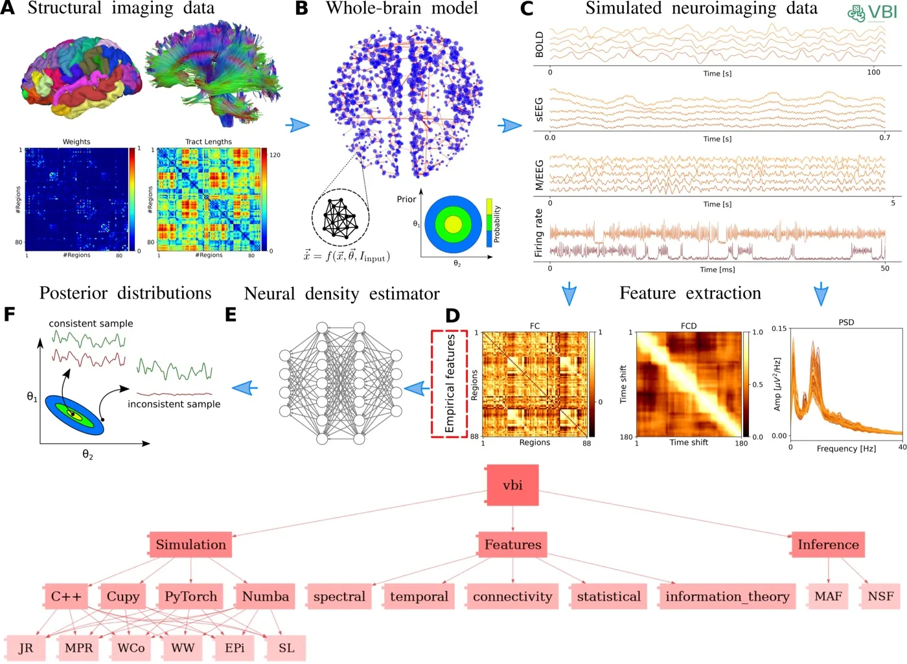

Virtual Brain Inference (VBI)
Probabilistic inference on whole-brain models, from simulation to posterior.
- Fast simulators in C++, CuPy (GPU) and Numba, spectral, temporal and connectivity features, and deep neural density estimators that recover model parameters from neuroimaging data.
- Lead developer; published in eLife (2025) and the Journal of Open Source Software (2026), and available on EBRAINS.
Python, C++, CuPy, Numba, PyTorch, sbi, SWIG
